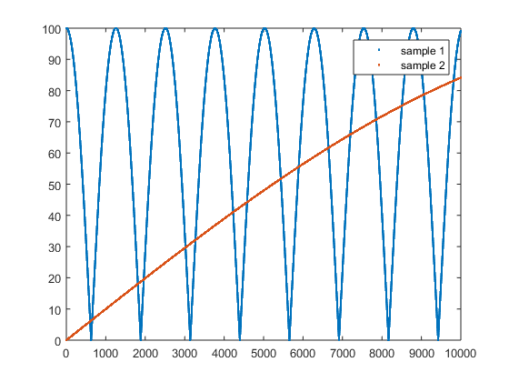
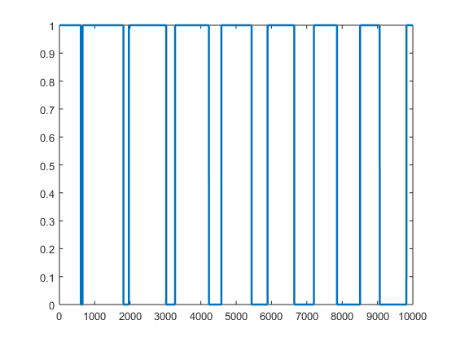
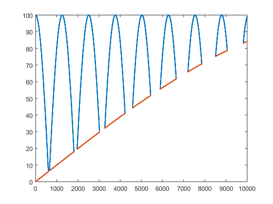

Contents
Scalars:
x=2 x*3
x =
2
ans =
6
Vectors/matrices:
x=[1 2 3; 4 5 6; 7 8 9] x(1,1) %returns 1st row, 1st column x(1,1:2) %returns 1st row, columns 1 through 3 x(1,:) %returns the entire first row x(1,3)= x(end, end) %assings a new value to position (1,3) x*x %performs matrix multiplication x.*x %performs element-by-element multiplication %The "list notation" can also be used to assign values. We could have %written the first line as x=[1:3; 4:6; 7:9]
x =
1 2 3
4 5 6
7 8 9
ans =
1
ans =
1 2
ans =
1 2 3
x =
1 2 9
4 5 6
7 8 9
ans =
72 84 102
66 81 120
102 126 192
ans =
1 4 81
16 25 36
49 64 81
Conditional Indexing: Your new best friend
clear all %We have some data as a function of time for two samples: time=[1:10000]; sample1=abs(100*cos(time/400)); sample2=100*sin(time/10000); figure(1) plot(time,sample1,'.',time,sample2,'.') legend({'sample 1' 'sample 2'})
Conditional indexing part 2
figure(2) plot(sample1>sample2,'linewidth',2) %What if we're interested only in data where sample1 is greater than sample 2? %Instead of simply using row/column indexing, we can input conditions tic %get all values of the variosu vectors for indecies where the value of %sample1 is higher than sample 2. x=time(sample1>sample2); y=sample1(sample1>sample2); y2=sample2(sample1>sample2); t1=toc; %here is how you'd typically do this in C++/java/fortran/etc %This method will still give the same results in Matlab, but is MUCH slower tic j=1; for i=1:10000 if sample1(i)>sample2(i) xif(j)=time(i); yif(j)=sample1(i); yif2(j)=sample2(i); j=j+1; end end t2=toc;
conditional indexing part 3
figure(3) plot(x,y,'.',x,y2,'.') ylim([0 100]) xlim([0 10000]) sprintf('Conditional indexing method took %0.2g seconds',t1) sprintf('For loop and if statement method took %0.2g seconds',t2) sprintf('Conditional indexing is %0.2g times faster',t2/t1)
ans = Conditional indexing method took 0.00075 seconds ans = For loop and if statement method took 0.03 seconds ans = Conditional indexing is 40 times faster
Structures and Properties
clear all %In matlab, you can also create structures that contain many different %types of data. This is useful in some situations and is used extensively %by MTEX. %Here we set up a structure called Sample. Each sample has 4 properties: %material, type, data, and rate sample.material='Zircaloy-2'; sample.type='tensile'; sample.data=0:0.2:5; sample.rate=1e-4;
Structures and Properties 2
%Like regular variables, structures can be made into arrays: Let's add a %second entry to sample: sample(2).material='Excel'; sample(2).type='compression'; sample(2).data=0:-0.2:-5; sample(2).rate=1e-5;
Samples and Properties 3
%We can use conditional indexing on structures too! %Let's say we wanted to find samples that had a rate of 1e-5 x=sample([sample.rate]==1e-5); %note that we neeed to use square brackets to turn our structure output %into something that can be directly compared to a value. This is just an %odd Matlab quirk.